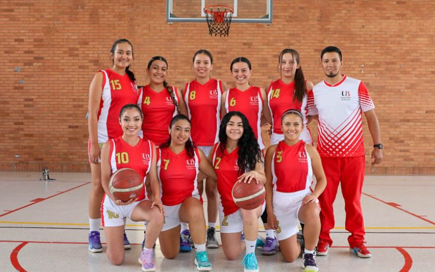
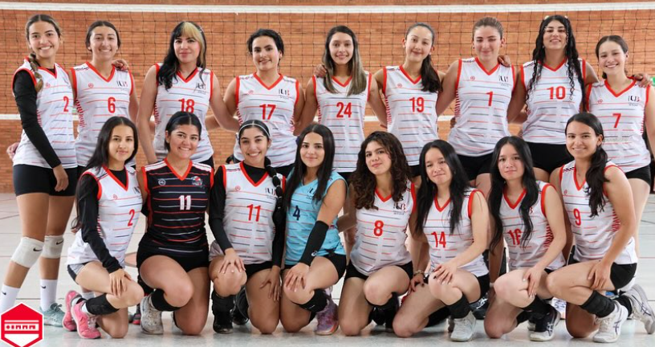
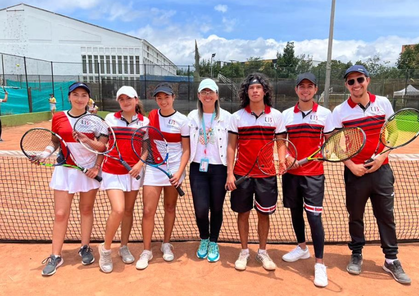

Fútbol Sala
Es una variante del fútbol que se juega en un campo más pequeño y en interiores, generalmente con cinco jugadores por equipo. Se caracteriza por su ritmo rápido, el uso de paredes y la necesidad de habilidades técnicas y tácticas precisas.
| Posición | Descripción | Jugadores Clave |
|---|---|---|
| Portero | Defiende la portería | Juan Pérez |
| Cierre | Jugador defensivo | Pedro López |
| Ala Derecha | Jugador de banda derecha | Carlos Gómez |
| Ala Izquierda | Jugador de banda Izquierda | Ricardinho |
| Pívot | Jugador ofensivo | Eder Lima |
| El 5 ideal del 2024 | ||
Baloncesto
Es un deporte de equipo en el que dos conjuntos de cinco jugadores compiten para anotar puntos lanzando una pelota a través de un aro elevado. El juego se desarrolla en una cancha rectangular y combina velocidad, agilidad y habilidades de manejo del balón.
Para más detalles sobre las reglas del baloncesto, Dale click aquí.
Voleibol
Este deporte se juega entre dos equipos de seis jugadores cada uno, separados por una red. El objetivo es enviar el balón por encima de la red y hacer que toque el suelo del lado contrario. Requiere coordinación, trabajo en equipo y habilidad para realizar pases, bloqueos y remates.
Aprende más sobre el voleibol aquí.
Tenis
Es un deporte de raqueta que puede jugarse entre dos jugadores (individual) o entre dos parejas (dobles). El objetivo es golpear la pelota para que pase por encima de la red y toque el suelo en el lado del oponente, con el fin de ganar puntos. Es un deporte que demanda precisión, resistencia y estrategia.
Descubre las reglas y técnicas del tenis aquí.